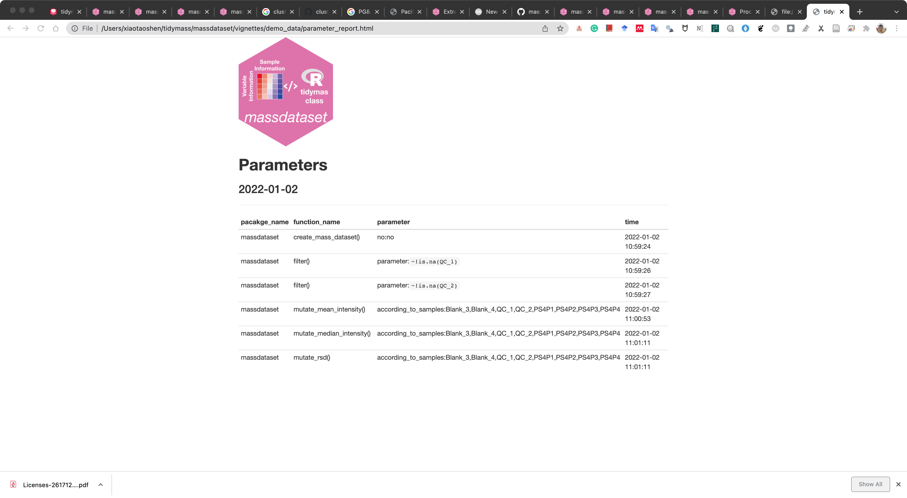

library(massdataset)
data("expression_data")
data("sample_info")
data("variable_info")
object =
create_mass_dataset(
expression_data = expression_data,
sample_info = sample_info,
variable_info = variable_info
)
library(tidyverse)
object =
object %>%
activate_mass_dataset(what = "expression_data") %>%
filter(!is.na(QC_1))
object =
object %>%
activate_mass_dataset(what = "expression_data") %>%
filter(!is.na(QC_2))
object =
object %>%
mutate_mean_intensity()
object =
object %>%
mutate_median_intensity() %>%
mutate_rsd()9 Processing information in mass_data class
9.1 Data preparation
In mass_dataset class object, it contains all the processing information in it. We can trace the analysis and parameters so we can do the reproducible analysis.
9.2 process_info
process_info = extract_process_info(object)
process_info$create_mass_dataset
--------------------
pacakge_name: massdataset
function_name: create_mass_dataset()
time: 2025-07-20 19:17:24.136639
parameters:
no : no
$filter
$filter[[1]]
--------------------
pacakge_name: massdataset
function_name: filter()
time: 2025-07-20 19:17:24.257823
parameters:
parameter : `~!is.na(QC_1)`
$filter[[2]]
--------------------
pacakge_name: massdataset
function_name: filter()
time: 2025-07-20 19:17:24.258741
parameters:
parameter : `~!is.na(QC_2)`
$mutate_mean_intensity
--------------------
pacakge_name: massdataset
function_name: mutate_mean_intensity()
time: 2025-07-20 19:17:24.261094
parameters:
according_to_samples : c("Blank_3", "Blank_4", "QC_1", "QC_2", "PS4P1", "PS4P2", "PS4P3", "PS4P4")
$mutate_median_intensity
--------------------
pacakge_name: massdataset
function_name: mutate_median_intensity()
time: 2025-07-20 19:17:24.267445
parameters:
according_to_samples : c("Blank_3", "Blank_4", "QC_1", "QC_2", "PS4P1", "PS4P2", "PS4P3", "PS4P4")
$mutate_rsd
--------------------
pacakge_name: massdataset
function_name: mutate_rsd()
time: 2025-07-20 19:17:24.27099
parameters:
according_to_samples : c("Blank_3", "Blank_4", "QC_1", "QC_2", "PS4P1", "PS4P2", "PS4P3", "PS4P4") The process_info contains all the steps which are ordered by time.
process_info$mutate_median_intensity--------------------
pacakge_name: massdataset
function_name: mutate_median_intensity()
time: 2025-07-20 19:17:24.267445
parameters:
according_to_samples : c("Blank_3", "Blank_4", "QC_1", "QC_2", "PS4P1", "PS4P2", "PS4P3", "PS4P4") process_info$mutate_median_intensity@parameter$according_to_samples
[1] "Blank_3" "Blank_4" "QC_1" "QC_2" "PS4P1" "PS4P2" "PS4P3"
[8] "PS4P4" 9.3 Output html processing information
We can output the process_info into a html format file, so we can know what processing steps have been made to this object and the accurate parameters.
Then we can use report_parameters() to output this into a html file.
report_parameters(object = object,
path = "demo_data/data_cleaning")A html file named as parameter_report.html will be generated and saved in data_cleaning folder.

9.4 Session information
sessionInfo()R version 4.4.1 (2024-06-14)
Platform: aarch64-apple-darwin20
Running under: macOS 15.5
Matrix products: default
BLAS: /Library/Frameworks/R.framework/Versions/4.4-arm64/Resources/lib/libRblas.0.dylib
LAPACK: /Library/Frameworks/R.framework/Versions/4.4-arm64/Resources/lib/libRlapack.dylib; LAPACK version 3.12.0
locale:
[1] en_US.UTF-8/en_US.UTF-8/en_US.UTF-8/C/en_US.UTF-8/en_US.UTF-8
time zone: Asia/Singapore
tzcode source: internal
attached base packages:
[1] stats graphics grDevices utils datasets methods base
other attached packages:
[1] lubridate_1.9.3 forcats_1.0.0 stringr_1.5.1 purrr_1.0.2
[5] readr_2.1.5 tidyr_1.3.1 tibble_3.2.1 tidyverse_2.0.0
[9] ggplot2_3.5.1 dplyr_1.1.4 magrittr_2.0.3 masstools_1.0.15
[13] massdataset_1.0.34
loaded via a namespace (and not attached):
[1] pbapply_1.7-2 remotes_2.5.0
[3] rlang_1.1.4 clue_0.3-65
[5] GetoptLong_1.0.5 matrixStats_1.4.1
[7] compiler_4.4.1 png_0.1-8
[9] vctrs_0.6.5 reshape2_1.4.4
[11] rvest_1.0.4 ProtGenerics_1.36.0
[13] pkgconfig_2.0.3 shape_1.4.6.1
[15] crayon_1.5.3 fastmap_1.2.0
[17] XVector_0.44.0 rmarkdown_2.29
[19] tzdb_0.4.0 UCSC.utils_1.0.0
[21] preprocessCore_1.66.0 xfun_0.52
[23] MultiAssayExperiment_1.30.3 zlibbioc_1.50.0
[25] GenomeInfoDb_1.40.1 jsonlite_1.8.9
[27] DelayedArray_0.30.1 BiocParallel_1.38.0
[29] parallel_4.4.1 cluster_2.1.6
[31] R6_2.5.1 stringi_1.8.4
[33] RColorBrewer_1.1-3 limma_3.60.6
[35] GenomicRanges_1.56.2 Rcpp_1.0.13-1
[37] SummarizedExperiment_1.34.0 iterators_1.0.14
[39] knitr_1.49 IRanges_2.38.1
[41] timechange_0.3.0 Matrix_1.7-1
[43] igraph_2.1.1 tidyselect_1.2.1
[45] rstudioapi_0.17.1 abind_1.4-8
[47] doParallel_1.0.17 codetools_0.2-20
[49] affy_1.82.0 lattice_0.22-6
[51] plyr_1.8.9 withr_3.0.2
[53] Biobase_2.64.0 evaluate_1.0.1
[55] zip_2.3.1 xml2_1.3.6
[57] circlize_0.4.16 pillar_1.11.0
[59] affyio_1.74.0 BiocManager_1.30.25
[61] MatrixGenerics_1.16.0 foreach_1.5.2
[63] stats4_4.4.1 MSnbase_2.30.1
[65] MALDIquant_1.22.3 ncdf4_1.23
[67] generics_0.1.3 hms_1.1.3
[69] S4Vectors_0.42.1 munsell_0.5.1
[71] scales_1.3.0 glue_1.8.0
[73] lazyeval_0.2.2 tools_4.4.1
[75] mzID_1.42.0 QFeatures_1.14.2
[77] vsn_3.72.0 mzR_2.38.0
[79] openxlsx_4.2.7.1 XML_3.99-0.17
[81] grid_4.4.1 impute_1.78.0
[83] MsCoreUtils_1.16.1 colorspace_2.1-1
[85] GenomeInfoDbData_1.2.12 PSMatch_1.8.0
[87] cli_3.6.3 S4Arrays_1.4.1
[89] ComplexHeatmap_2.20.0 AnnotationFilter_1.28.0
[91] pcaMethods_1.96.0 gtable_0.3.6
[93] digest_0.6.37 BiocGenerics_0.50.0
[95] SparseArray_1.4.8 rjson_0.2.23
[97] htmlwidgets_1.6.4 htmltools_0.5.8.1
[99] lifecycle_1.0.4 httr_1.4.7
[101] GlobalOptions_0.1.2 statmod_1.5.0
[103] MASS_7.3-61